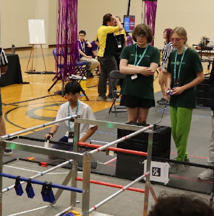

I acknowledge that the information I post here is public.
- L.O. 8/19/2025
At Carolinas Premier Event (2025 FTC Competition, I’m the driver on the left in the photo)
hi!
My name is Liam (username is wave/waverider), and I’m a High School junior in the CCP Dual Enrollment program. This is my first year here, and I am currently enrolled in 2 APs and 3 CPCC classes this semester. I am a creative computer scientist/inventor and visionary. I have a passion for coding, math, making music, art, games, computers, and robots. I also co-captain a robotics team, FTC 16461, Infinite Turtles- seamlessly working with others while also mentoring newer members. I also designed the current arm of the robot on my team.
- Personal Background:I started my life in Southern California before moving to Charlotte. I am now 16 years old.
- Professional Background: Former IT Intern at Little Diversified (Maintained and repaired employee hardware and prepped computers for donation to E2D. Also handled some tickets.), Continued Collins Aerospace Partnership to manufacture custom additive titanium parts for my robotics team, volunteered at the Matthews Alive Festival and at a Discovery Place Booth (both also for my team). Also founded and mentored another robotics team (FTC 24078) for 2 years.
- Academic Background: Current Dual Enrollment here at CPCC/STEM-focused homeschool program, including classes in upper-level math and science. Successful completion of AP CSA. GPA 4.3. ITE JS certificate program completion scheduled Spring 2026 and Associates in Science scheduled Spring 2027.
- Primary Computer:Framework Laptop 16 (AMD Ryzen 9 7040 Series) with Discrete AMD Radeon RX 7700S GPU. OS is Arch Linux with Hyprland, waybar, swww, eww, wofi, (etc…), and custom configs (though I also dual-boot with Windows 11). Primary working location is my desk at home, though I set up anywhere.
- Courses I’m Taking, & Why:
- MAT271 - Calculus I:I am taking this because it's required, and I also love math.
- ACA112 - College Transfer Success:A required course to get me used to CPCC
- ENG111 - Writing and Inquiry:Also required, but writing is also super important. (I’m writing right now!)
- WEB115 - Web Markup and Scripting (this class!):Because I want to improve and optimize my web-building skills.
- Funny/Interesting Item to Remember Me by: I actually am (update: was!) on vacation at a Lake Michigan beach while I’m doing college, which I think is pretty funny.
- I’d Also Like to Share:I built an 8-bit computer from the ground up! I prototyped, made schematics, designed and laid out a PCB, got it made, assembled it, programmed an “OS” and some simple games and test programs. I also made changes to a FAT32 SD card library for the CPU I am using on this (6502), and added file creation/writing! (previously not supported)
Quote:
"Clearance is a Boolean."
- A common phrase passed around in the FTC Community